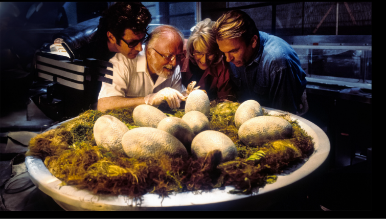

The Wet Lab is Part of the Model
AI can predict biology, but biology still decides what’s real
If you haven’t been sleeping under a rock, then you’ve at least heard that AI can design drugs. This is fair and exciting because the models are helpful and make things clear for us and can spot things that you and I would probably miss after 4 coffees and looking at your work at 8 pm all slumped in your computer chair (but still want to sit there because sitting there means you’re still doing work…but you know you’re not 😉). I genuinely appreciate AI because it lets me spend less time on the grunt work of finding possibilities and more time on deciding which experiment is actually worth running. Like my brain kicking in and saying, “Wait, they need different transfection methods, can that inherently create bias?”
My main point is that AI can make predictions, but eventually those predictions have to meet real biology in an experiment. Of course, I’d love a robot to run the experiment because it would save time and energy, and maybe one day the whole process will be automated. But the cells still get the final vote. That may sound obvious, but it is an important piece I think is slowly being overlooked.
It’s like when you grow up and you ask your mom for advice and she says well you should do this, or maybe you should take this class, or this job would be better. But guess what? That was all based on her experience and predictions based on knowledge she possessed and info you fed her about the current situation and that was applied to a new future scenario. But what determines what happens after that? Me, Bianca, the person doing life.
The same principle applies to science. I consult AI, it predicts stuff, but then Bianca and/or a robot needs to test that prediction in biology. AI may eventually design and even execute the experiments for me, but it still needs biology to give answers back.
I just ran this experiment and I got the answer. Hold your horses, getting a result doesn’t mean you understand what happened
Imagine this, you get a pile of RNA molecules you want to test in cells, and you want to know which gives a higher reporter signal. You run the test and A is giving a higher luminescence reading than B. Woohoo! That means A is better than B and is the BEST! Sometimes that’s true, but a higher signal isn’t enough evidence to conclude that A is the better therapeutic. Why do you ask? Because saying A is the best sits on top of a whole host of unknowns.
A quick list of things I’d ask:
-
Was your RNA intact in both cases?
-
Did we quantify them right?
-
What was the relative innate immune response? Did that affect expression? Oh boy, what immune signals should I look at? Wait, what pathway would it even trigger? Omg…
-
Was transfection efficiency good in all the wells? Did I put the dish on an angle in the incubator or was the incubator set up on an angle? (don’t laugh, this has happened, or maybe that is funny? lol)
-
Were the cells equally healthy?
-
Is the reporter itself biasing the readout?
The AI can only see what we choose to measure and give it. But I the scientist must decide what that value means and what you can’t say about it. This is why experimental work can’t just be treated as a “validation step” at the end of a model’s pipeline. The experiment is part of the system’s intelligence.
Models only see what the assay lets them see
I had a Mustang once and kept hearing these weird sounds on the highway. I took it to the mechanic; they hooked it up to that computer and they said there’s nothing wrong. But I knew the car wasn’t fine. The scanner only measures problems the car’s sensors are designed to detect. That noise could be something wearing down without ever triggering a “code” in the car’s computer.
The same principle applies to assays. Every decision in a biological data set you get was shaped by human decisions. For example, I chose the cell type, dose, time point, what to measure, which controls, how to get a successful result. You get a window into the biology, but I created a window that isn’t complete.
If an experiment measures only protein expression, the model may learn which sequences produce the strongest signal under those conditions. It may not learn which sequences cause excessive innate immune activation, reduce cell viability or lose expression after twenty-four hours.
The data isn’t bad, but AI can only learn from what the experiment actually measures. If my experiment missed something or there’s a problem, the AI could learn those problems too. Being good at predicting an assay doesn’t always mean being good at predicting real human biology.
It’s like trying to figure out what’s going on in the neighborhood but you only put a camera into the window of one person’s home and draw conclusions from what you see..
The goal isn’t just more data
We could probably agree that most people, when trying to answer a question, say well, we need more data. We don’t just need more data though; we need better data. We need clarity and that’s the challenge. And probably the hardest assays to run are the assays that can separate competing explanations like, if a therapy fails, was it unstable? Did it even enter the cell? (another funny moment, people thinking they can just throw anything on a cell, and it will be taken up 😂) Was translation blocked? Was the protein degraded? Or did my assay just miss the real signal?
So, the point here is that AI can help me decide what to test next, but it can’t rescue an experiment that was never designed to answer the why.
But AI can speed everything up, right?
But what if I’m using the wrong directions? Driving my Subaru faster isn’t going to get me there faster I’m just lost faster … LOL
I love turning this into real life so here’s another scenario if you are a Casper fan.
The scene where Dibs (Eric Idle) and Kat (Christina Ricci) sit in this ridiculous machine that’s supposed to get him ready for the day. It brushes teeth, shaves, does everything and theoretically is more efficient. Except it’s terrible at the job, you see the toothbrush is brushing the face and then the knives coming to cut his beard and he’s in the chair on the conveyer belt that’s going to get him there no matter what but the knives are clacking together sharpening up for their task ahead, but the knives are so large they look like they are going to sacrifice an animal.
But this is the point, automating a bad process doesn’t suddenly make it a good one. You’ve just made the bad process faster and Biology has the same problem. AI can accelerate the design-test-learn cycle, but if the assay feeding that cycle is noisy or misleading, you’re just getting crappy data faster.
AI changes what the scientist’s job actually is
AI is great because it can shift scientists’ role from generating data to actually designing systems that produce data we can interpret. So that means scientists can now ask:
-
Does this assay measure the biology we care about?
-
Can this assay separate competing mechanisms?
-
Are controls good to rule out noise?
-
Is this assay reproducible and scalable?
-
Can we generalize this data beyond this experiment?
So having a good assay means it doesn’t just test the hypothesis it also shapes what the system can learn next.

We can use Jurassic Park to emulate this scenario. If you can recall the scene when they discover the dinosaur eggs are hatching but they are like, “wait, the dinosaurs are breeding?” They were like, we made all the dinosaurs female therefore they can’t reproduce. That’s an experimental strategy that is incomplete. They measured something, but it wasn’t enough to answer the biological question they actually cared about. The real question was: “Can these dinosaurs reproduce in this environment?” A scientist acting as a system designer would think beyond simply checking whether the dinosaurs were originally female:
-
Could the frog DNA change their biology? (In the movie, they used frog DNA to fill gaps in the dinosaur DNA, and some frogs can change sex under certain conditions.)
-
Could sex change under certain environmental conditions?
-
Are there eggs or nests appearing?
-
Are we monitoring reproductive behavior?
-
Would our measurements even catch reproduction if it started?
So, when I say that a good assay does not just test a hypothesis, it shapes what the system can learn next, that means Jurassic Park shouldn’t have just asked, “Are they female?” They needed to design a system capable of answering the bigger question: “Can life find a way?” 😂
You’re not just the person running the experiment anymore. You’re deciding what window into reality the AI gets to see.
The wet lab is part of the model
Think of AI drug discovery as a loop where everything depends on everything else. For example, the AI will suggest what to test and then you run the experiment to test it and the result can be fed back into AI to teach it what to try next. However, this loop is only as good as what information you feed back into it. And I think one of the worst things is when the data gives inconsistent results: AI can mistake random noise for something important. So, the real point is that we have to make sure that we have smart AI, good experiments and that the AI and experiments are constantly learning from each other.
So, the real power isn’t just having really smart AI or really good experiments. It’s making sure the AI and the biology are constantly learning from each other.
Ideally it looks like this:
AI says, “Based on what I know, I think these 10 molecules are worth testing.”
The lab tests them.
Biology says, “Actually, #7 worked really well. #2 was toxic. #4 did nothing.”
AI learns from those results and makes a smarter next guess.
If this isn’t hitting home, just remember the Jurassic Park scene and it gives the whole lesson.
Scientists: “We designed this system and we know what it will do!” All confident like us scientist 😉
Biology: “SURPRISE!”
So, the lesson here is that we can make our best prediction, but biology might do something completely different and the experiment is what tells us what’s actually real.
Small caveat: this movie is fiction, but you get the idea, biological systems can behave in unexpected ways your model/design didn’t anticipate, and this is very real.
End of the day, biology gets the final say
AI can make a really good prediction, but then you run the experiment and biology is like, “Nope.” 😂 And honestly, that’s where it gets interesting because now you have to figure out what you missed and why.